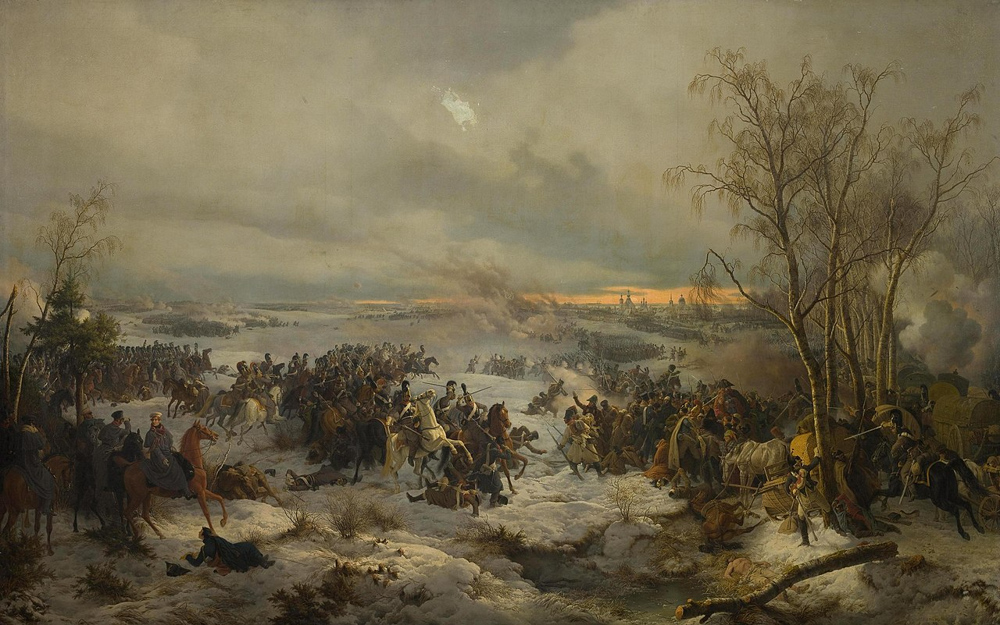
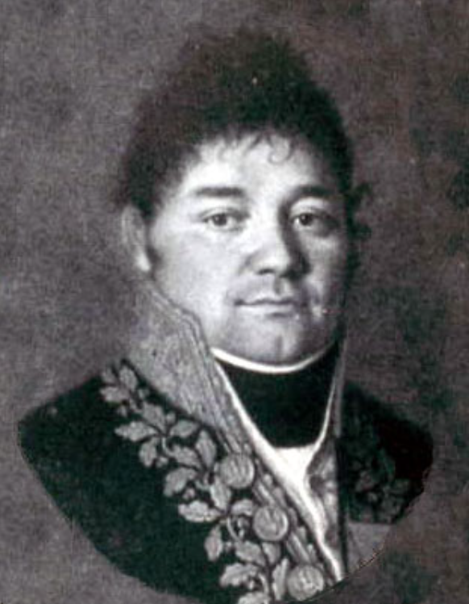
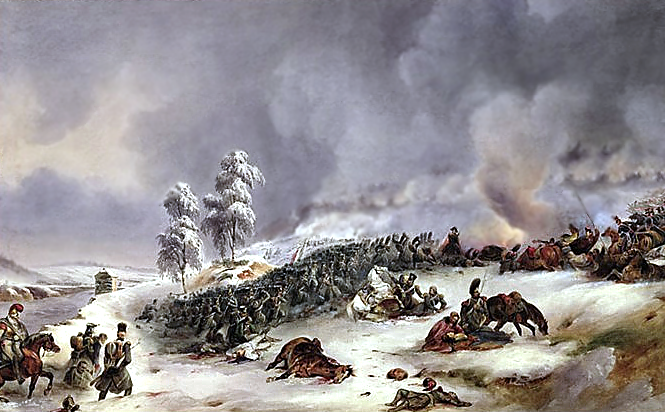
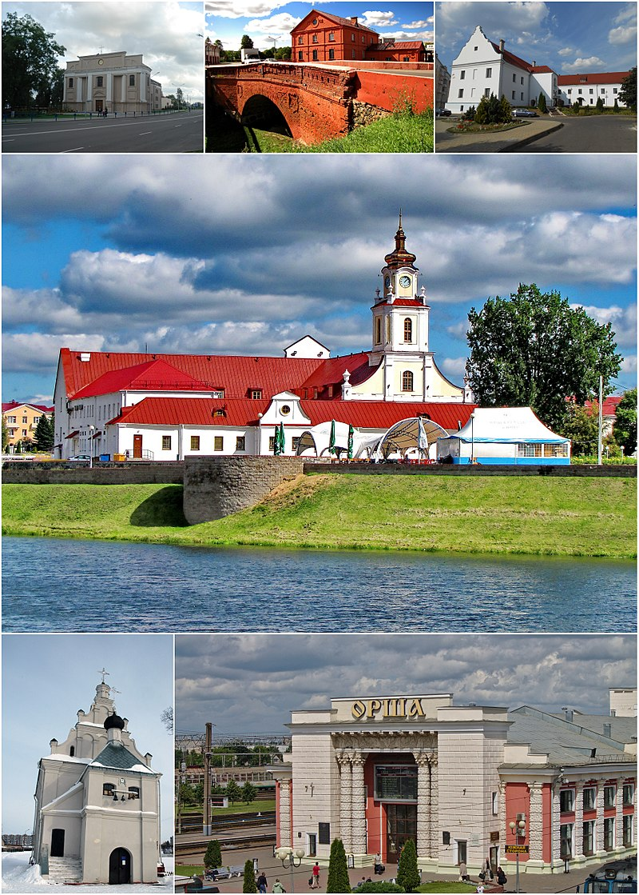
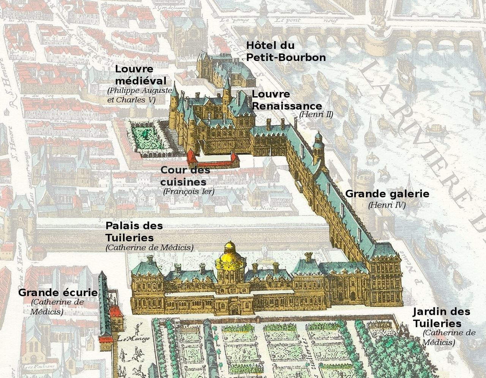
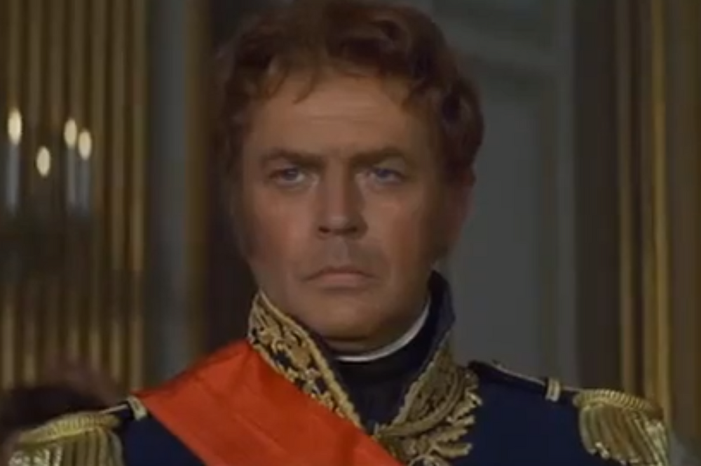

네(Ney)를 바친다 - 크라스니(Krasny) 전투 (2)
게시: 2021-08-16T06:30:32+09:00
나폴레옹은 흩어진 쪽이 지며, 지고 있는 측은 기다려서는 안된다는 것을 누구보다 잘 알고 있는 사람이었고 정확한 판단을 내렸습니다. 그는 크라스니에서 기다리지 않고 밀로라도비치의 러시아군을 공격하기로 합니다. 그는 11월 17일 아침 근위대의 선두에 서서 크라스니 동쪽으로 진격했습니다. 스몰렌스크 대로의 남쪽에 늘어선 밀로라도비치의 러시아군은 나폴레옹이 저렇게 나오자 다소 당황했고, 압도적인 포병 전력으로 근위대를 강타했습니다. 그러나 나폴레옹은 오랜만에 젊은 시절의 나폴레옹으로 돌아간 듯한 모습을 보여주었습니다. 바로 주변의 병사들이 포탄에 직격되는 바람에 피떡이 되어 뒤로 나가떨어지는 와중에도 그는 아무 일도 없다는 듯이 침착하게 말을 몰았습니다. 그의 이런 모습은 부하 병사들 뿐만 아니라 적군에게도 무척 깊은 인상을 남겼습니다. 러시아군은 근위대의 기세에 밀려 막고 있던 대로 상에서 물러나 남쪽으로 퇴각했습니다. 물론 밀로라도비치가 아무 대책 없이 겁을 먹고 물러선 것은 아니었습니다. 그는 이 모든 상황을 불과 몇 km 떨어진 쿠투조프의 본진에게 알렸고, 쿠투조프의 참모들, 그러니까 톨, 베니히센, 윌슨 등은 이번에야말로 나폴레옹 본인을 죽이거나 사로 잡을 절호의 기회라며 흥분해서 당장 총공격을 하자고 난리를 쳣습니다. 그러나 상대는 쿠투조프였습니다. 당연히 꿈쩍도 하지 않았습니다. 이건 정말 이해를 할 수 없는 일이었는데, 이때 나폴레옹의 그랑다르메는 조각조각 분할되어 있어서 그야말로 취약하기 그지 없는 상태였고 3배의 병력을 가진 쿠투조프의 압승이 뻔한 상황이었습니다. 그러나 쿠투조프는 움직이지 않았습니다. 어쩌면 쿠투조프는 정말 나폴레옹이 유럽으로 살아돌아가 중서부 유럽을 계속 전쟁의 화염으로 활활 태우기를 원했다고 판단할 수 밖에 없는 행동이었습니다. 그렇다고 쿠투조프가 아무 것도 안 한 것은 아니었습니다. 그는 어떻게 보면 게으름뱅이 놈팽이 같고 어떻게 보면 나폴레옹을 손바닥 위에 올려놓고 가지고 노는 부처님 같은 행동을 취했습니다. 그는 러시아군 본진을 살짝 서쪽으로 옮겨 마치 오르샤(Orsha)로 향하는 나폴레옹의 퇴로를 끊을 것 같은 모습을 보여주었습니다.

(이렇게 간단히 적어놓으면 다부가 아무 전투 없이 쉽게 크라스니로 들어온 것 같지만 아니었습니다. 나폴레옹의 응전에도 불구하고 밀로라도비치는 다가오는 다부의 군단을 기병대와 포병대를 이용하여 집요하게 괴롭혔고, 그 와중에 제3군단은 다부의 개인 소지품을 실은 마차를 포함하여 대부분의 짐마차를 잃어야 했고, 덕분에 다부의 원수봉과 원수 군복은 러시아군 손에 넘어갑니다. 다부의 원수봉은 상트 페체르부르그에 보내져 조리돌림을 당했고, 원수 군복은 어떤 러시아 할머니 손에 들어가서 약탈된 러시아 정교회를 위해 새로운 사제복을 만드는 재료로 쓰였습니다. 이 그림은 헤스(Peter von Hess)라는 독일 화가가 1849년에 그린 크라스니 전투입니다. 그림 왼쪽이 러시아군이고 오른쪽이 프랑스군인데, 저 멀리 배경의 프랑스군은 방진을 짜서 저항하고 있지만 그림 앞쪽의 짐마차를 호송하는 프랑스군은 혼란 속에 빠져 있습니다. 그 짐마차를 끌고 있는 흰말이 앙상하게 뼈만 남은 것이 인상적이네요. 그림 왼쪽 하단에 적갈색 말을 타고 있는 흰 모자의 지휘관이 밀로라도비치인데, 발 밑에 쓰러져 올려다보고 있는 프랑스 장교를 도와주라고 지시하는 모습이 그려져 있습니다.) 그러는 사이 이렇게 나폴레옹이 직접 나서서 길을 터준 덕분에, 다부의 제1군단은 무사히 나폴레옹과 합류하여 크라스니로 들어올 수 있었습니다. 그러나 여기서 나폴레옹은 다부에게 크게 역정을 냈습니다. 왜 네의 제3군단을 기다리지 않고 혼자서 왔느냐고 비난한 것입니다. 이건 다부로서는 너무나 억울한 일이었습니다. 하루에 군단 하나씩 출발하라고 한 것은 나폴레옹 바로 본인이었습니다. 그런데 하루 늦게 출발한 네를 기다리지 않고 왜 의리없이 혼자 살겠다는 결정을 내렸냐고 힐책하다니요. 이유가 다 있었습니다. 나폴레옹은 쿠투조프가 자신의 퇴로를 위협한다는 것을 알고 있었고, 네까지 기다렸다가는 본진까지 끝장나므로 네를 버려야 한다고 이미 결정을 내렸던 것입니다. 그러나 네를 버리면 의리 없이 혼자 살겠다고 부하를 버린 비겁남이 되므로 그 책임을 다부에게 돌렸던 것이지요. 나폴레옹의 못된 버릇은 여전했습니다. 크라스니를 빠져나가는 것도 쉽지 않았습니다. 이미 쿠투조프와 밀로라도비치의 러시아군이 크라스니 외곽까지 압박해들어오고 있었으므로 누군가는 남아서 그들을 붙들어 두어야 했습니다. 나폴레옹은 자신이 가진 자원 중 가장 가치 없는 것을 가차없이 희생했습니다. 황실 근위대 중 제1 저격병 연대, 보통 사람들이 신참 근위대(la Jeune Garde))라고 부르는 부대를 로게(François Roguet) 장군 지휘 하에 뒤에 남겨 크라스니를 지키게 한 것입니다. 이때도 쿠투조프의 러시아군은 상당히 소극적으로 행동하여 보병을 근거리로 투입하지 않고 원거리에서 무자비한 포격만 가하여, 반격할 포병대를 갖지 못한 신참 근위대를 피떡으로 만들어 놓았습니다. 로게 장군에 따르면 신참 근위대는 3시간 내내 꼼짝도 하지 않고 일방적으로 날아드는 포탄을 묵묵히 몸으로 받아내며 그야말로 희생물로 바쳐졌습니다.

(로게 장군입니다. 그는 나폴레옹보다 1살 연하였고 나폴레옹의 이탈리아 원정 때도 함께 있었는데, 1809년 바그람 전투에서 신참 근위대를 지휘한 이후로는 계속, 심지어 워털루에서도 신참 근위대를 맡아 지휘했습니다. 워털루 이후 강제 전역 당했다가 1830~1831년의 벨기에 독립전쟁 때 개입한 프랑스 사단을 지휘했습니다.) 이렇게 네와 신참 근위대를 제물로 던져 주고 나서도 나폴레옹의 후퇴는 그야말로 고생길이었습니다. 나폴레옹의 본진이 크라스니를 떠나기 전, 이미 대규모의 낙오병들과 민간인들이 먼저 크라스니를 출발하여 오르샤로 향했는데, 그 길 위에는 이미 대규모의 코삭 기병들이 포진하고 있었습니다. 코삭 기병들을 보고 겁을 먹은 이들은 무질서하게 다시 크라스니로 몰려왔는데, 이들이 나폴레옹의 본진과 길 위에서 딱 맞닥뜨려 대혼란과 교통정체를 일으켰습니다. 설상가상으로 러시아군 포병대가 나타나 원거리에서 나폴레옹의 본진에 지속적으로 포격을 가하여 그야말로 난장판을 만들어 놓았습니다. 이 와중에 병사들의 피해와 노고는 말할 수 없을 정도로 심했습니다. 적 포병대를 쫓아내기 위해 무릎까지 쌓인 눈 밭을 가로질러 총검 돌격을 해야 했기 때문입니다. 당연히 이들이 헉헉거리며 눈을 헤치고 다가가면 적 포병대는 대기하던 말에 포가를 달아 끌고 달아난 뒤 다시 다가오곤 했습니다. 신참 근위대 말고도 본진에서도 많은 병사들이 죽어야 했습니다. 기병대가 남아있었다면 좋았을 것이고, 그게 안된다면 차라리 처음부터 스몰렌스크에서 4개 군단을 하나로 모아서 출발했다면 어땠을까 하는 아쉬움이 들었습니다만 방법이 없었습니다.

(크라스니 전투에서 방진을 짜고 러시아 기병대에 저항하는 제33 보병연대의 모습입니다.) 아마 이때 쿠투조프가 전 병력을 동원하여 나폴레옹을 쳤다면 여기서 모든 것이 끝났을 것입니다. 그러나 쿠투조프는 정말 집요할 정도로 나폴레옹과의 정면 대결을 회피했고, 부하들이 제발 지금 총공격하자는 애걸을 외면했습니다. 쿠투조프가 정말 나폴레옹을 살려두는 것이 유럽 전체의 세력 균형을 러시아에게 유리하게 몰고 갈 수 있다는 생각이어서 그런 것이 아니었다면, 쿠투조프는 아직 건재한 나폴레옹의 근위대를 껄끄러워 했던 것일 수 있습니다. 확실히 근위대는 체력과 군기 측면에서 확실히 남다른 면모를 보여주었습니다. 게다가 여태까지 살아남은 다른 군단병들도 그만큼 강인한 병사들이었기에 살아남은 것이었습니다. 이는 크라스니 전투에서 보여준 외젠의 이탈리아군의 투지나, 이제 곧 네의 제3군단이 보여줄 용맹함을 보더라도 입증이 됩니다. 그에 비해 쿠투조프의 러시아군은 절반 이상이 몇 달 전까지만 해도 머스켓 소총을 손에 쥐어 본 적이 없는 농민들에 불과했고, 그랑다르메 병사들 못지 않게 러시아 병사들도 추위와 강행군, 굶주림으로 계속 녹아내리고 있었습니다. 근위대가 중심이 된 그랑다르메는 온갖 난관을 뚫고 마침내 11월 19일, 1차 목적지였던 오르샤(Orsha)에 도달합니다. 여기엔 꽤 충분한 식량이 비축되어 있어 병사들을 기쁘게 했고, 머스켓 소총과 탄약, 대포 등의 무기까지 일부 저장되어 있었습니다. 나폴레옹은 여기서 낙오된 병사들을 규합하여 부대를 재편성하기로 합니다. 그는 스몰렌스크 때와 마찬가지로, 부대 깃발 하에 소속되어 대오를 이룬 병사들에게만 식량 배급이 이루어지도록 했습니다. 아직 도착하지 않은 네의 제3군단 외에 아직 부대를 이룬 병력이 3만인 것에 비해 낙오병도 그 정도 규모였으니 그들을 재편하려면 식량을 미끼로 삼는 것이 가장 효과적이기 때문이었습니다.

(오르샤는 원래 폴란드-리투아니아의 도시로서, 지금은 벨라루스의 영토이며 현재 인구는 대략 11만명 정도입니다. 1772년 제1차 폴란드 분할 때 러시아의 영토가 되었습니다. 원래 유대인이 많이 사는 도시였는데, 러시아의 영토가 되면서 인구가 대폭 감소하여 2천명까지 떨어졌다고 합니다. 사진에서 보시듯이 드네프르(Dnepr, Dnieper) 강의 서쪽에 있기 때문에 방어하기 유리한 곳이었습니다.) 여기서 나폴레옹은 비로소 부대 이동에 방해가 되는 사적인 짐마차 등을 단속하기 시작했습니다. 그는 오르샤로 진입하는 드네프르 강 위의 다리에 직접 자리를 잡고 인가되지 않은 병사들이 가진 말들을 강제 징발하고 사적인 수레 등은 아예 소각하도록 했습니다. 왜 애초에 모스크바를 출발할 때부터 그러지 않았느냐고 비난할 수는 없습니다. 모스크바를 출발할 때만 해도 이렇게 열악한 상황에서 눈과 얼음 속을 헤치며 가게 될 줄은 몰랐고, 무엇보다 병사들의 충성를 필요로 하는 나폴레옹은 그들이 원정에 기꺼이 따라나섰던 실질적인 이유, 즉 노략질의 결실에 손을 댈 수는 없었습니다. 그러나 이제 이런 식으로 가다간 모두 죽는다는 공감대가 형성되었기 때문에 비로소 나폴레옹은 병사들의 말과 수레를 징발할 수 있었던 것입니다. 스몰렌스크를 출발할 때 그런 조치를 취했다면 더 좋았겠지요. 속속 오르샤로 입성하는 낙오병들을 보는 나폴레옹은 속이 편치 않았습니다. 이제 앞으로 어떻게 할 것인가 하는 것도 걱정이었지만 네의 제3군단 생각을 하지 않을 수 없었기 때문입니다. 그는 전에 '혼자 파리로 먼저 튀는 것에 대해 병사들은 어떻게 생각할까'를 콜랭쿠르에게 물을 정도로 병사들의 눈치를 안 보는 척 하면서도 몹시 보는 처지였습니다. 그런 그가 '네와 제3군단 전체를 내버리고 왔다'라는 뒷담화에 신경을 안 쓸 수는 없었습니다. 그는 부하들이 다 듣도록 큰 소리로 '네를 기다리지 않고 혼자서 탈출한 다부'에 대해서 계속 욕을 해대며 '만약 누구든 네를 구해온다면 튈르리 궁전 금고에 들어있는 3억 프랑을 한 푼도 남기지 않고 다 주겠다' 라며 공언하기도 했습니다. 이건 다 개솔휘에 불과했습니다. 나폴레옹이 네와 제3군단을 버리고 크라스니를 떠난 것이 11월 17일인데, 네에게 지시한 것이 11월 17일에 스몰렌스크를 출발하라는 것이었으니까요.

(1615년 당시의 모습을 표현한 그림인데, 그림 아래쪽이 튈르리 궁전(Palais des Tuileries)이고 그 위에 있는 것이 예전 모습 그대로의 루브르(Louvre)입니다. 나폴레옹은 퇴위하고 나서 세인트 헬레나 섬에서 회고록을 구술할 때도 자신이 튈르리 궁전 금고에 3억 프랑의 금화를 남겨둘 정도로 프랑스의 재정을 튼튼히 했다고 허풍을 쳤는데, 과연 금고에 3억 프랑이 있었는지는 아직 확인을 못했습니다.) 나폴레옹의 이런 허풍과 남탓하기가 당시 병사들에게는 어떤 영향을 주었는지는 불분명합니다만, 모든 병사들이 네 원수가 어떻게든 기적적으로 살아서 합류하기를 바랬다고 합니다. 네가 나폴레옹의 원수들 중에서 가장 뛰어나거나 가장 똑똑한 사람은 아니었지만, 가장 용맹하고 솔직담백한 사람은 맞았던 모양입니다. 굳이 비교를 하자면 1798년 이집트 원정 당시의 클레베르(Jean Kléber) 같은 인물이었지요. 그래서 병사들은 엄격한 다부에 대해서는 존경과 두려움을 가지고 있었고 네에 대해서 존경과 애정을 가지고 있었습니다. 많은 장교들이 지도를 펴놓고 네와 제3군단이 살아서 오르샤로 올 수 있는 경로를 고심해보았지만 아무리 봐도 기적이 벌어지지 않는 한 그럴 일은 없어 보였습니다.

(1970년 영화 'Waterloo'에서의 미쉘 네(Michel Ney)입니다. Dan O'Herlihy라는 배우가 맡았는데, 붉은 곱슬머리가 특징인 네의 외모와 꽤 닯았습니다. 네는 백일천하가 끝난 뒤 나폴레옹의 부하 원수들 중에 유일하게 처형당한 비극을 겪어야 했는데, 그야말로 남자다웠던 그의 죽음이 못내 아쉬웠는지 그가 실은 죽지 않고 살아서 미국에 건너가 천수를 누렸다는 전설에 가까운, 하지만 매우 그럴싸한 소문이 있습니다. 그 이야기도 나중에 할 기회가 있기를 바랍니다.) 그러나 상대는 포기할 줄 모르는 남자 네였습니다. 기적은 일어나는 것이 아니라 일으키는 것이지요. Source : 1812 Napoleon's Fatal March on Moscow by Adam Zamoyski
https://en.wikipedia.org/wiki/Battle_of_Krasnoi https://www.hermitagemuseum.org/wps/portal/hermitage/digital-collection/01.+Paintings/46027/ https://en.wikipedia.org/wiki/Fran%C3%A7ois_Roguet https://en.wikipedia.org/wiki/Tuileries_Palace https://historica.fandom.com/wiki/Michel_Ney